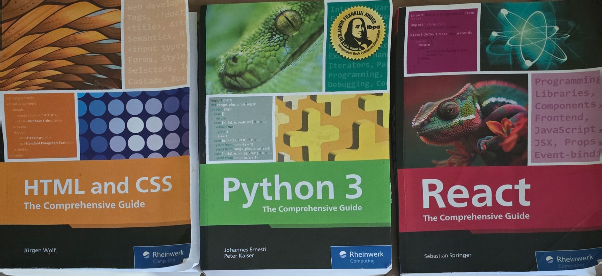

I've been working as a self-taught software developer for the past few years. Internally I've been reading these books to improve my skills and knowledge in software development. They have been instrumental in my growth and development as a developer. I am passionate that one day I will work as a softwrae developer. My intuition is to work random hours throughout the day to help finalize my goals. I have to make a few projects and set them for reference.